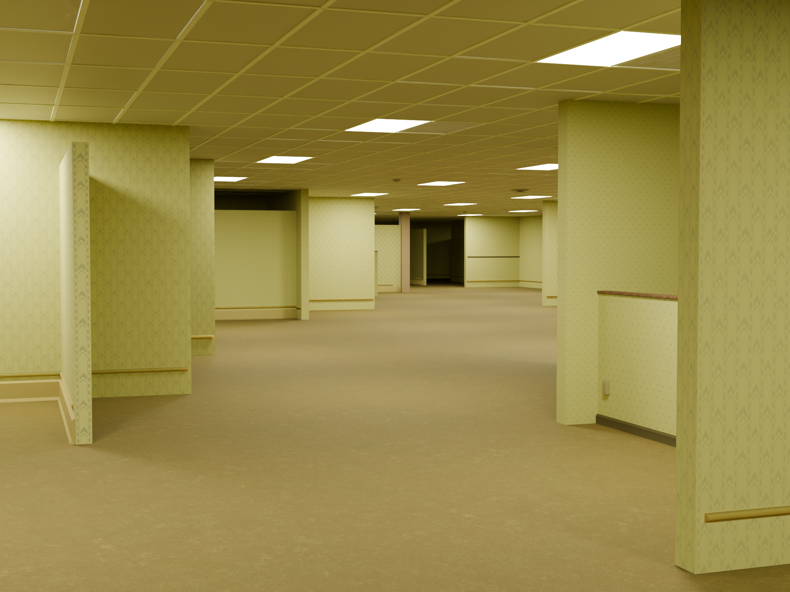
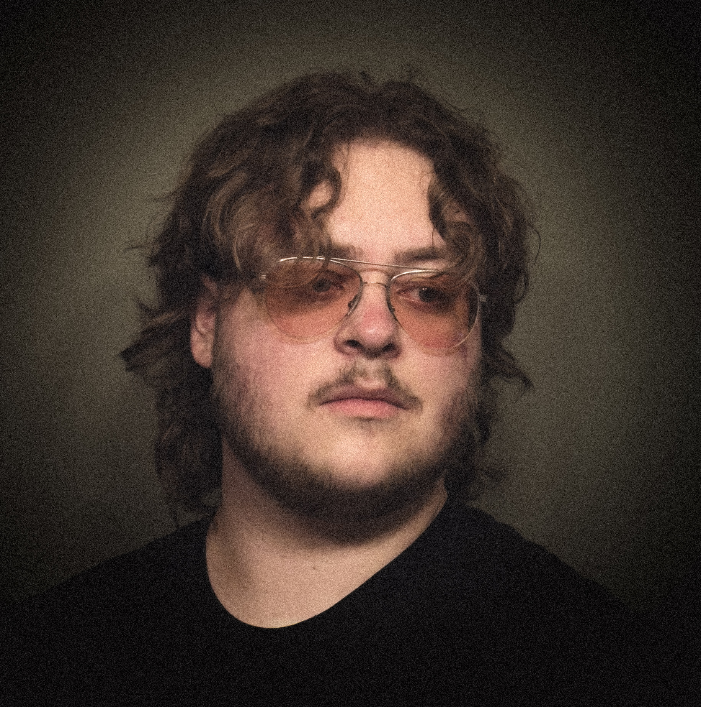

"The good news is hell is just the product of a morbid human imagination. The bad news is whatever humans can imagine, they can usually create."Harmony Cobel, Severance (2022)

Mark is a Visual Artist who focuses mainly on Blender 3D modelling and rendering. Mark also does various work in the photography field, composing, 2D art, graphic design, videography, editing, and more. Mark was born in Great Falls, Montana in 2006 and attends the University of Montana. Currently Mark works in the live television industry, working as a Camera Operator and Co-Producer for Montana Rodeos. Mark also is the lead Camera Operator for televised games for the Great Falls Electric Pro Baketball league. Mark also recently joined the development team as an Enviornmental Artist for "Pinata Puppy World," an indie exploration and horror game set for release next year.